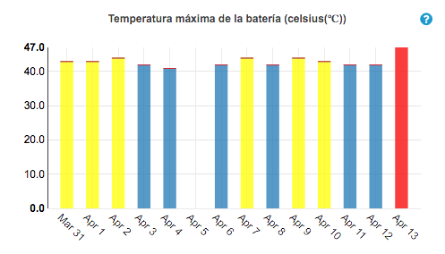
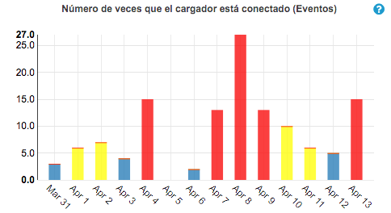

No puede Hacer/Recibir Llamadas.
FAQ: 140741 - Matrix MG68
-
Verica la intensidad de la señal
-
Realiza un reinicio forzoso.
-
Limpia el cache/almacenamiento de la App.
-
Envía el teléfono a revisión.
Problemas con apps de terceros.
FAQ: 143977 - Matrix MG171
-
Revisa en play store si la App tiene actualizaciones disponibles.
-
Revisa los permisos de la App
-
Fuerza la detención de la aplicación.
-
Limpia la app de archivos temporales y datos.
-
Desinstala y vuelve a instalar la App.
Problemas para transferir archivos vía USB.
FAQ: 140515 - Matrix MG49
-
Confirma si el cliente ha descargado e instalado los drivers en su computadora, si el cliente no los tiene
-
Verifica si el equipo identifica que el teléno ha sido conectado a la computadora. Si no lo reconoce o el cliente no ve que la computadora lo haga, conecta otro dispositivo al puerto USB de la computadora.
-
Si la computadora reconoce el otro dispositivo, prueba conectando el equipo con otro cable USB si no lo reconoce, prueba el puerto USB del equipo, conectandolo a otra computadora.
-
Si el equipo no es reconocido con otro cable en otra computadora, refiere a revisión al MASC.
-
Si el equipo es reconocido en la computadora, con otro cable USB u otro equipo, y el cliente sigue sin poder transferir. Refiere el cliente a soporte de N2.
Publicidad en el dispositivo.
FAQ: 141364 - Matrix MG59
-
Determina la raíz de la publicidad (Juegos, aplicaciones de optimización, ahorro de batería, etc).
-
Verificar en la aplicación Chrome si el bloqueador de sitios emergente está activo ve a
-
Borrar la caché del navegador. No borres los datos completos de la aplicación, pues algunas funciones o restricciones pueden quedar sin efecto si se borra los datos de la app completamente
-
Borrar credenciales
-
Informa al cliente que por diseño algunas apps utilizan publicidad y patrocinios como una forma de financiamiento y muy probablemente vuelva a ver publicidad cada vez que utilice una app que en su diseño contenga publicidad. De ser así lo mejor es contactar directamente al desarrollador por medio de play store o al soporte de google para mayor asistencia, pues es una situación relacionada al funcionamiento específico apps y no al funcionamiento general del dispositivo.
No recibo notificaciones de llamadas entrantes u otras notificaciones.
FAQ: 138647 - Matrix MG189
(El comportamiento de las notificaciones de las “Llamadas entrantes” de la App de telefono puede ser configurado como Configuración > Apps y notificaciones > Teléfono > Notificaciones > Llamadas entrarntes > Comportamiento. Ahi puedes seleccionar si quieres que cada vez que entre una llamada tu equipo te notifique: "Emitiendo sonido y mostrando en pantalla", "Emitir sonido", "Mostrar sin emitir sonido" o "Mostrar en silencio y minimizar" )
-
Si no estas recibiendo ninguna notificación, es posible que apagaras los elementos visuales. Ve a: Configuraciones> Sonido> No Interrumpir and revisa las configuraciones de "Notificaciones" si el equipo está configurado para que recibas "Notificaciones sin sonido", "Notificaciones sin sonido ni elentos visuales" u otra configuración personalizadada.
-
Si no recibes notificaciones de una app en específico. Revisa las configuraciones de notificaciones para la App en cuestión, en Configuraciones > Apps > Todas las apps > La app que exprimenta el inconveniente. (Para assitencia dentro de la app, contacta al desarrollador de la app directamente)
-
Selecciona recietes y desliza todas las apps hacia la derecha . Apaga el equipo y vuelve a encender.
-
Asegurate de tener buena señal de red o WiFi.
-
Si el problema es con una aplicación en específico, revisa si hay actualizaciones disponibles para esta. Desinstala y vuelve a instalar la App, de ser necesario.
-
Prueba el equipo en modo seguro y desinstala las apps de tercernos de ser necesario.
Habilitar / deshabilitar TalkBack.
FAQ: 127764 / 128137 / 140169 - Matrix MG179
-
Opción 1
-
Si tu dispositivo tiene activado el acceso directo de accesibilidad, presiona ambas teclas de volumen durante 3 segundos.
-
Opción 2
-
Ingresa a Configuración > Accesibilidad > TalkBack > Desliza el interruptor de TalkBack a la posición activado o desactivado > Aceptar.
Pantalla Negra / Blanca.
FAQ: 140732 - Matrix MG25
-
Mantener presionado el botón de encendido durante 1 minuto
-
Si funciono: Revisar en Moto Focus para confirmar que no existan anormalidades con carga, kernel panics, reinicios por software upgrades, etc.
-
Si hay problemas (depende de los hallazgos en Focus) o si no responde la pantalla, procede a referir a PAM
-
Si no hay problemas y la pantalla responde cerrar caso como solucionado (con autorización previa de Staff) dando sugerencias según Focus
-
No funciono: Refereir el teléfono al MASC.
Pantalla no responde o responde lento.
FAQ: 122202 - Matrix MG32
-
Confirmar con el cliente que ya haya retirado el FILM protector que trae el teléfono
-
No lo a retirado Sugierele al cliente retirar el FILM y realiza pruebas
-
Ya lo retiro y el problema persiste sigue con el siguiente paso.
-
Realiza un reinicio forzoso.
-
Si luego del reinicio forzoso el problema persiste pero el problema es de
verfica si el EQ del cliente cuentacon una SD y validar
si esta configurada como almacenamiento interno y sugierele retirar la SD y realiza nuevamente un reinicio forzoso.
-
Si luego del reinicio forzoso el problema persiste pero el problema es de
será necesario enviar el teléfono al MASC.
-
Si luego del reinicio forzoso el problema se corrige comparte las siguientes recomendaciones al cliente.
-
Retirar apps de terceros como optimizadores de memoria o batería y antivirus.
-
Verifica si hay una actualización de software disponible para el teléfono del usuario
-
Sugiere liberar espacio en el teléfono si llegará ser necesario.
Pantalla parpadeante.
FAQ: 140505 - Matrix MG54
-
Confirmar que el teléfono no haya tenido daños y referiere al MASC
Pantalla fantasma.
FAQ: N/A - Matrix MG177
-
Validar que no haya tenido daños ni alteraciones en el sistema y refierelo al MASC.
Pantalla Rota.
FAQ: 140735 - Matrix MG175
-
Se le explica que está como fuera de garantía y se procede a referir al MASC.
Lineas o manchas blancas / negras.
FAQ: 122213 - Matrix MG56
-
Verificar los las líneas o manchas se ven en el logo de Motorola.
- Si se ven en el logo de Motorola envía el teléfono al MASC.
-
No se ven en el logo de Motorola sigue con el siguiente paso.
-
Validar si tiene una SD y ver como la tiene configurada y sugiere retirar la SD
Toques fantasmas.
FAQ: 133980 - Matrix MG53
-
Localizar el problema
-
Si el problema es específico de una aplicación, intenta estos pasos para solucionar problemas específicos de la aplicación.
-
Si usas Wi-Fi y el teléfono anda lento cuando ves sitios web o videos en línea, podría haber un problema con tu conexión. Intenta usar una red Wi-Fi diferente o comunícate con tu proveedor de servicios de Internet
-
Verifica si el cliente usa una mica, protector o case
-
Realiza un reinicio forzoso.
-
Validar si cuenta con una SD.
-
Comprueba en Motofocus el almacenamiento disponible y libera espacio si es necesario.
-
Busca si el teléfono posee alguna actualización disponible.
-
Si el cliente ya realizó todos estos pasos o vemos que todo está en orden con estas configuraciones, envía el teléfono añ MASC.
Descarga rápida.
FAQ: 122266 - Matrix MG78
-
Tiempos ESTIMADOS de duración de batería según uso: (equipos con baterías de 3000mAh – 4000mAh)
-
Tiempo de conversación: 23.8 hrs
-
Tiempo de espera: 192.7 hrs
-
Navegación web: 10.3 hrs
-
Transmisión de música: 55.7 hrs
-
Chat de redes sociales (Whatsapp): 11.2 hrs
-
Transmisión de video: 10.9 hrs
-
Navegación GPS: 7.4 hrs
-
Verifica las configuraciones y consumo de energía del equipo en Moto Focus
-
Duración esperada de la batería (horas)
-
Niveles máximos y mínimos de la batería. (% Cargado)
-
Número de veces que el cargador está conectado (Eventos)
-
Resistencia de la batería (milliohms(mΩ))
-
Pantalla a tiempo sin necesidad de cargar (horas)
-
Si al revisar la información del equipo en Focus encuentras detalles e indicadores en rojo o que indiquen problemas con la unidad y la batería de la unidad dura menos de 6 horas refiere el equipo a revisión técnica.
-
Si la batería del equipo tiene una duración menor a 6 horas, refiere el equipo a revisión técnica
-
Revisa el consumo de batería en Configuración > Batería > Detalles de uso. Enfócate en las apps de terceros y del sistema que consuman más energía.
-
Comparte los tips básicos para extender la duración de la batería que puedes brindar:
-
Conexiones: desactiva Bluetooth y GPS cuando no los estés usando.
-
Wi‑Fi: activa Wi‑Fi cuando el teléfono se encuentre en una ubicación con cobertura Wi-Fi.
-
Desactiva la búsqueda de redes wi-fi automáticamente y notificaciones.
-
Desactiva mejora de presición de ubicación mediante Configuración > Internet y redes > Wi-fi > Con el Wi-fi desactivado seleccionar "Configuración de ubicación" y desactivarlo
-
Pantalla: disminuye el brillo de pantalla, cambia el Tema oscuro y establece un tiempo de espera de la pantalla más corto.
-
Sincronización: si no la necesitas, desactiva la sincronización automática de todas las cuentas. Esto significa que ya no recibirás notificaciones cuando ocurran actualizaciones y deberás sincronizar el dispositivo manualmente para recibir nuevos correos.
SobreCalentamiento.
FAQ: 116165 - Matrix MG79
Revisa la información del equipo en la sección de alertas en Moto Focus.
-
Si el gráfico de "Temperatura máxima de la batería (celsius(℃)" muestra temperaturas mayores a 46 grados más de un día (hay más de una barra en rojo) el equipo podría estar experimentando problemas de sobrecalentamiento, refiere la unidad a revisión técnica.

-
Puedes correlacionar la data este gráfico con el gráfico de " Número de veces que el cargador está conectado", si en este tambien se muestran más de 3 incidencias diarias (hay más de una barra en amarillo o rojo) el equipo puede estar experimentando problemas de batería y por ende de sobre calentamiento, refiere la unidad a revisión técnica.

-
Si el gráfico de resistencia de la batería ves alertas, es muy probablemente que el sobrecalentamiento del equipo sea causado porque la batería está consumiendo más recursos de lo habitual y lo mejor es enviar el equipo a revisión técnica.
-
Verifica y Educa.
-
Verifica que aplicaciones están utilizando más batería. Si es una app instalada por el cliente y está consumiendo mucha energía y no necesaria (el cliente no le da mucho uso) pídele al cliente que considere desinstalar.
-
Recomienda actualizar todas las apps instaladas y actualizar el equipo a la última versión de software disponible.
-
Si el cliente siente que el calor viene del frente de la unidad, revisa la configuración de la pantalla. No es inusual que la pantalla del equipo se caliente cuando es utilizada por largos periodos de tiempo. Ve a Configuraciones > Pantalla, revisa el modo reposo y nivel de brillo para ver si es necesario bajar los niveles.
-
Si el cliente siente que el calor viene de la parte trasera del teléfono, puede ser un signo de calentamiento por una app corriendo. Cierra as aplicaciones deslizando todas las ventanas a la derecha.
-
Los equipos necesitan su espacio; Los equipos no cuentan con un sistema de enfriamiento integrado. El equipo necesita "respirar" para enfriarse. Para enfriarse asegurate que el equipo no esté en un bolsillo, cartera, case o luz del sol directa.
-
Es posible que el equipo se caliente por darle un "uso fuerte". Este comportamiento es normal especialmente si estás transmitiendo datos, hablando por periodos extensos de tiempo, utilizando navegación por GPS o reproduciendo videojuegos, música o videos en el dispositivo
-
Comparte estas recomendaciones y pide al cliente que pruebe el equipo por las prox. 24 horas. Al cerrar el caso, envía el correo de "problemas aleatorios" con los detalles del centro técnico o formulario para envio por paqueteria en caso la falla persista y cerra como referido al MASC.
-
Si el cliente no tiene correo, comparte estas recomendaciones en llamada y deja el caso como cliente llamará y queda a la espera de su contacto con los resultados de las pruebas, si en tres días no contacta, cierra el caso como cliente no responde.
-
Realiza la prueba de temperatura en Ayuda de Moto.
-
Si el equipo no pasa la prueba - refiere al MASC.
-
Si el equipo pasa la prueba - transfiere a N2.
EQ no carga.
FAQ: 140730 - Matrix MG77
-
Descarta fallas consultando si el cliente ya utilizo otros cargadores.
-
Si ya realizo pruebas con otros cargadores y el teléfono SI carga procedo a enviar al MASC el cargador.
-
Si ya realizo pruebas con otros cargadores y el teléfono NO carga procede a enviar el teléfono al MASC.
-
Realiza un reinicio forzoso.
EQ con carga lenta.
FAQ: 146584 - Matrix MG154
-
Tiempo meta de carga para baterías de 3000mAh a 4000 mAh* (a excepción del moto one action).
-
5W (5V/1A) Cargador “en caja” conectado a una batería de 3000-4000mAh - Tiempo de carga de 0%~100% (~3.5hrs)
-
10W Rapid (5V/2A) Cargador “en caja” conectado a una batería de 3000-4000mAh Battery - Tiempo de carga de 0%~100% (~2.5hrs)
-
15W Turbo (9V/1.6A or 5V/3A) Cargador “en caja” conectado a una batería de 3000-4000mAh Battery -Tiempo de carga de 0%~100% (~1.5hrs)
-
27W Turbo (9V/3A, 11V/2.4A, 12V/2.25A) Cargador “en caja” conectado a una batería de 3000-4000mAh - Tiempo de carga de 0%~100% (~1hr) - Rio H
-
Tiempo meta para baterías de 5000mAh (G7 Power, moto e4 plus, moto e5 plus).
-
10W Rapid (5V/2A) meta de carga de 0%~100% ~3 Hours
-
15W Turbo (9V/1.6A or 5V/3A) meta de carga de 0%~100% ~2 Hours
-
18W Turbo - El equipo solo usa 15W, usar mismo parametro (dato arriba).
-
Moto One Action
-
10W (5V/2A) Cargador “en caja” conectado a una batería de 3500mAh - Tiempo de carga de 0%~100% 3hrs (Cargando encendido) 3.5 hrs (Cargando apagado)
-
Confirma que el cliente usando el cargador y cable original del equipo.
-
Pide al cliente que pruebe con otro turbocargador.
-
Si la falla NO se reproduce con el otro cargador envía el cargador al MASC.
-
Si la falla SI se reproduce con el otro cargador envía el teléfono al MASC.
No enciende.
FAQ: 135312 - Matrix MG01
Conecta la unidad al cargador y confirma si apararece algún indicador o información en la pantalla.
-
Sí - Aconseja esperar a que la unidad cargue. Explica que es necesario al menos un 15% de batería para encender la unidad
-
No - Sigue con el siguiente paso.
Pide al cliente que pruebe otro cargador y conecta la unidad y confirma si apararece algún indicador o información en la pantalla.
-
Sí - Aconseja esperar a que la unidad cargue. Explica que es necesario al menos un 15% de batería para encender la unidad
-
No - Sigue con el siguiente paso.
Descarta un problema con la pantalla. Revisa si tu teléfono suena al recibir una llamada de otro celular.
-
Si sonó: Intenta forzar el inicio de la unidad desde "Fastboot"
-
Si la unidad no responde al intentar ponerla en fastboot, envía el teléfono al MASC.
Se reinicia o Apaga.
FAQ: 135310 - Matrix MG76
-
Revisa el almacenamiento del teléfono
-
Si tiene menos del 20% de almacenamiento, sugiere al cliente liberar espacio.
-
Verifica si el cliente cuenta con un SD configurada como extensión del almacenamiento interno.
-
Revisa la información del equipo en Moto Focus
-
Cantidad de veces que el teléfono se ha encendido / Number of Times the Phone has been Turned ON
-
Razones de arranque del dispositivo (Eventos) / Device Boot-Up Reasons (Events)
-
Kernel Panic Cuenta (Contar) / Kernel Panic Counts (Count)
-
Espacio de almacenamiento interno disponible (% Libre) / Available Internal Storage Space
-
Lista de bloqueos de aplicaciones (vista acumulativa) / Application Crash List
-
Lista de bloqueos del nivel del sistema (Crashes) / System Level Crash List
-
busca actualizaciones disponibles para la app en playstore.
-
si no hay actualizaciones disponibles, ofrece al cliente recuperar su unidad en rescate o asistente inteligente.
Si el cliente NO acepta o NO cumple requisitos para usar rescate, pide al cliente que remueva la app y pruebe el equipo
-
para verificar si es una falla con la ROM, Si encuentras alertas en este gráfico
-
Si no encuentras indicadores de problemas con la unidad, ofrece al cliente recuperar su unidad en rescate o asistente inteligente
-
Revisa el almacenamiento del teléfono
-
Si tiene menos del 20% de almacenamiento, sugiere al cliente liberar espacio.
-
Verifica si el cliente cuenta con un SD configurada como extensión del almacenamiento interno.
-
Confirma con el cliente si la falla se presenta al realizar una acción en específico o aleatoriamente, por ejemplo:
-
La falla sucede cuando abre una app de terceros.
-
Busca actualizaciones disponibles para la app en playstore
-
Si no hay actualizaciones disponibles, ofrece al cliente recuperar su unidad en rescate o asistente inteligente.
-
La falla sucede aleatoriamente.
Batería hinchada.
FAQ: 140731 - Matrix MG81
-
No es necesario seguir pasos de resolución de problemas para batería inflada/hinchada asi que envía el equipo a revisión a un MASC
Problema de audio con micrófono.
FAQ: 122261 - Matrix MG63
-
Primero identificar donde se presenta la falla
- Teléfono
-
Realiza pruebas en la App de ayuda del dispositivo
-
Borra datos a la App de efecto de audio y realiza un reinicio forzoso
- App de terceros
-
Si la falla solo se da en la aplicación de whatsapp por ejemplo,
puedes brindar consejos de limpieza de la app pero este escenario aunque lo soluciones
debes dejarlo referido al desarrollador de las apps.
Mala calidad de audio.
FAQ: 122261 - Matrix MG62
-
Primero identificar donde se presenta la falla
-
Señal:
-
Revisa que tenga señal de red móvil, si con otro simcard funciona sin problemas
procede a referir a Proveedor de servicio.
-
Confirma que esto no ocurra en una zona en especifico, si solo es en una zona
refiere con proveedor de servicio.
-
Teléfono:
-
Realiza pruebas en la App de ayuda del dispositivo
-
Borra datos a la App de efecto de audio, App de teléfono y realiza un reinicio forzoso
-
App de terceros:
-
Si la falla solo se da en la aplicación de whatsapp por ejemplo, puedes brindar consejos de limpieza
de la app pero este escenario aunque lo soluciones debes dejarlo referido al desarrollador de las apps.
Teléfono no suena.
FAQ: 122267 - Matrix MG149
-
Validar que no tenga un protector / case que esté estorbando en la bocina o auricular.
-
Confirmar que el teléfono no tenga sonido o sea solo con notificaciones y de ser así sigue el FAQ 138647.
-
validar que el moto no interrumpir este desactivado.
-
Realizar pruebas en la App de ayuda del dispositivo
-
Si no pasa la pruebas redirecciona el teléfono al MASC.
-
Si pasa la pruebas borra datos a la App de efecto de audio y realizar un reinicio forzoso
Bluetooth no conecta.
FAQ: 140613 - Matrix MG85
-
Confirma que Wi-fi esté trabajando sin problemas
-
Restablecer la configuración de red
-
Si el problema solo es con un dispositivo bluetooth y otros teléfonos pueden
vincularse procede a transferir con L2
-
Si otros teléfonos tampoco se logran emparejar con el dispositivo que el usuario
intenta conectar refiere al cliente a soporte del fabricante de este dispositivo.
Bluetooth se desconecta constantemente.
FAQ: 140613 - Matrix MG86
-
Confirma que Wi-fi esté trabajando sin problemas
-
Restablecer la configuración de red
-
Si el problema solo es con un dispositivo bluetooth y otros teléfonos pueden
vincularse procede a transferir con L2
-
Si otros teléfonos tampoco se logran emparejar con el dispositivo que el usuario
intenta conectar refiere al cliente a soporte del fabricante de este dispositivo.
No se puede conectar a una red WiFi.
FAQ: 158582 - Matrix MG88
-
Verifica si el equipo puede conectarse a otras redes WiFi
-
Si no detecta ni se conecta a otras redes realiza las pruebas en la App de ayuda del dispositivo
-
Si el teléfono detecta y se conecta a otras redes y pasa la prueba en la App de ayuda del dispositivo
realiza lo siguiente
-
Restablece las conexiones de red del teléfono.
-
Comprueba si hay actualizaciones de software disponibles para el teléfono.
-
Restablece el teléfono a las config. de fábrica.
WiFi se desconecta.
FAQ: 158582 - Matrix MG88
-
Revisa en MotoFocus los gráficos de: Tiempo de uso de WiFi (horas) y
Tiempo del dispositivo con WiFi Radio encendido (horas) para confirmar
los eventos de desconexión que el cliente reporta
-
Desactiva la busqueda de Wi-Fi
-
verificar si el teléfono cuenta con alguna actualización disponible.
-
Restablecer la configuración de red y el desconectar el Router de la corriente durante 30 segundos.
No puedo utilizar la Zona WiFi.
FAQ: 135663 - Matrix MG18
-
Confirmar que su plan de datos si sea libre y no solo de redes sociales
-
Configura ",DUN" en "tipo de APN" dentro de Configuración > Redes Móviles
-
Si funciono: deja caso solucionado con autorización previa de staf
-
No funciono: Transfiere a L2
Mi teléfono no lee mi SD.
FAQ: 136276 - Matrix MG21
-
Pide al cliente que pruebe con otra SD y si el teléfono lee la
otra SD, explicale al cliente que el error es de parte de la SD
que quiere utilizar sugiere formatearla a FAT y refiere la soporte
del manufactor.
Memoria no reconocida tras reinicio de fábrica (SD unificada).
FAQ: 136276 - Matrix MG21
-
Si el cliente contacta reportando que el equipo dejó de leer la SD luego
de realizar un restablecimiento de fábrica con la SD configurada como
extensión del almacenamiento interno (sin antes haber hecho un cambio
de partición a memoria a memoria externa). Explicale que la tarjeta
ha sido "bricked" y no podrá acceder a estar. Cuando configramos la
SD como extensión esta es encriptada y no se puede descifrar en ningún
otro dispositivo.
No reconoce la SIM.
FAQ: 122257 - Matrix MG114
-
Confirma ingresando a Configuración > Internet y redes > Red Móvil y si todo aparece
inhabilitado y tiene SIM ingresado y este SIM si funciona en otro teléfono o ya probró
otro SIM el teléfono procede a referir al MASC de lo contrario seguir proceso de sin señal.
Como descargar aplicaciones de Google.
FAQ: N/A - Matrix MG106
-
Ten en cuenta que existen tipos de android, (Go, AOSP, One) y pueden existir ciertas
App´s que no serán compatibles de lo contrario solo asistele en instalar
App´s mediante Playstore.
Play Store no abre o no descarga App´s.
FAQ: 143978 - Matrix MG172
-
Validar que tenga internet ya sea por WiFi o datos moviles.
-
Borrar datos a las App's Playstore, Servicios de Google y realizar un reinicio forzoso.
Family Link.
FAQ: N/A - Matrix MG176
-
En el teléfono configurado por la App de family link ingresa a dicha y remueve la cuenta.
-
Toca el icono de 3 lineas horizontales ubicado en la esquina superior izquierda.
-
Selecciona quitar/remover cuenta y luego luego remover cuenta.
-
Luego la App pedirá que se ingrese la contraseña de la cuenta del padre que tiene el control parenta.
-
Con ello se remueve y luego remueve la App
-
Si problema persiste transfiere al cliente a L2 ellos intentarían hacer reinicio de fábrica externo o replicar
el proceso si es una persona que tiene dificultades.
Cámara no cambia de frontal a trasera o viceversa.
FAQ: 139174 - Matrix MG111
-
Validar que sea la cámara del Teléfono y no de una App de terceros
-
Realizar pruebas en la App de ayuda del dispositivo
-
Validar si tiene una SD.
-
Si tiene SD: Verificar si esta configurada para que las fotos se almacenen en la SD
y retirar la actualización de la App y luego volver a configurar la SD.
-
No tiene SD: Borrar datos a cámara y un reinicio forzoso.
-
Si el problema persiste deja explicado proceso de referir a MASC según corresponda.
Cámara no abre o no responde.
FAQ: 139174 - Matrix MG107
-
Validar que sea la cámara del Teléfono y no de una App de terceros
-
Realizar pruebas en la App de ayuda del dispositivo
-
Validar si tiene una SD.
-
Si tiene SD: Verificar si esta configurada para que las fotos se almacenen en la SD
y retirar la actualización de la App y luego volver a configurar la SD.
-
No tiene SD: Borrar datos a cámara y un reinicio forzoso.
-
Si el problema persiste deja explicado proceso de referir a MASC según corresponda.